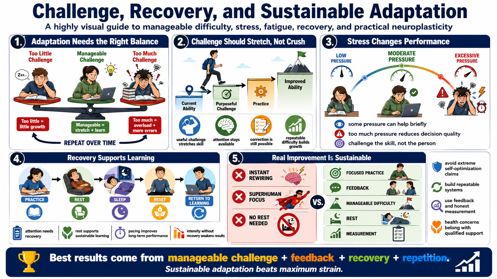

Stress, Recovery, and Adaptation
Connecting to LMS... Progress: in progress

Narration
Adaptation depends on the balance between challenge and recovery. A useful challenge stretches current ability and creates a reason to adapt. Too little challenge may not produce much growth. Too much challenge can overload attention, increase errors, and make correction difficult. The practical goal is not maximum strain. The goal is manageable challenge repeated over time with enough recovery to continue learning.
Stress and arousal can influence performance at a high level. Some pressure may sharpen attention for a short period, but excessive pressure can narrow attention, encourage rushing, and reduce decision quality. In learning design, this means difficulty should be purposeful. The learner should be challenged by the skill, not overwhelmed by fear, confusion, or unrealistic expectations.
Fatigue matters because learning and performance require attention. Rest and sleep, discussed here only at a general non-medical level, support sustainable learning because people need recovery to maintain focus and consolidate experience. A training plan that ignores recovery may produce short-term intensity but weaker long-term performance. Pacing is part of skill development, not a sign of low discipline.
Responsible use of neuroplasticity avoids extreme self-optimization claims. There is no need to promise instant rewiring, superhuman focus, or unsafe routines. Practical improvement comes from repeatable systems: focused practice, feedback, manageable difficulty, rest, and honest measurement. If motivation, fatigue, or stress becomes a health concern, that belongs with qualified support, not a course making broad promises.